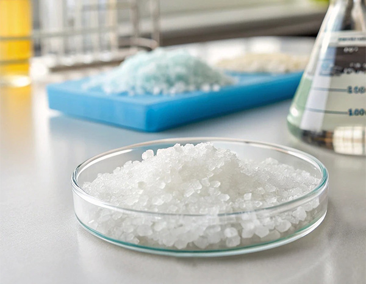
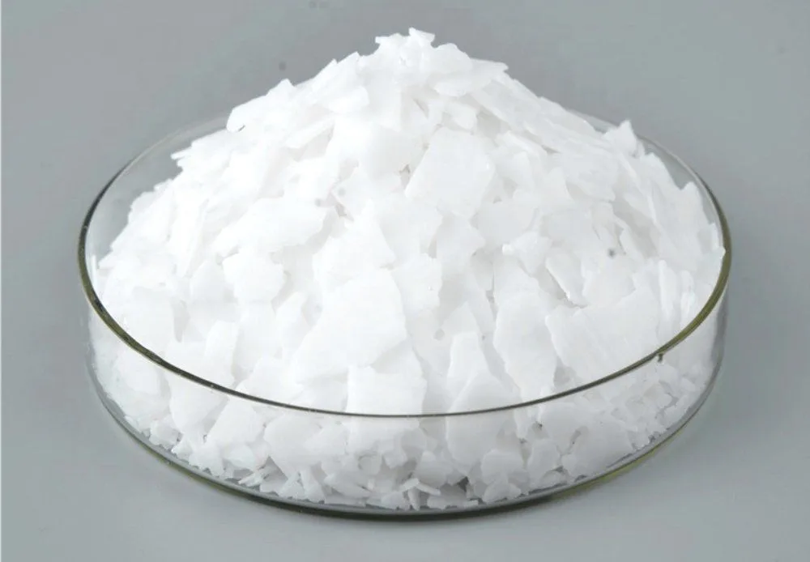
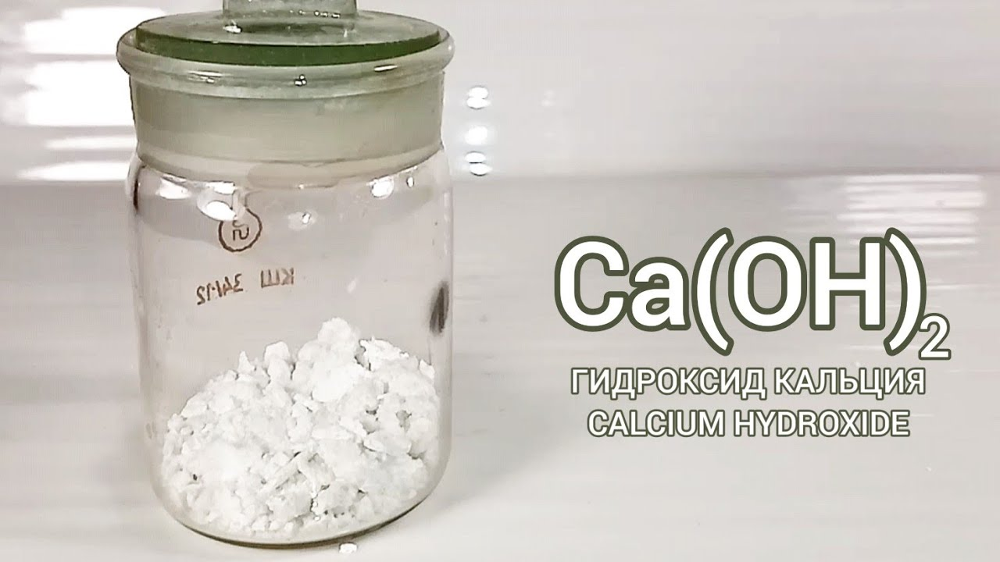
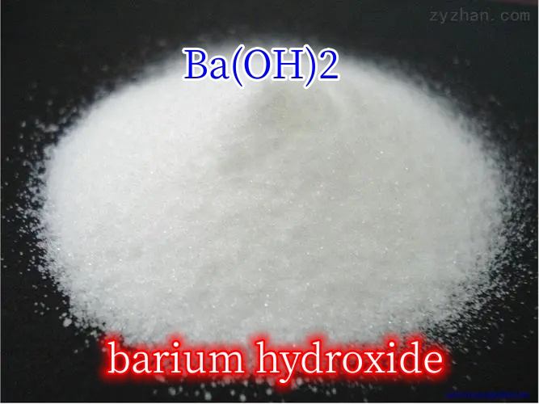
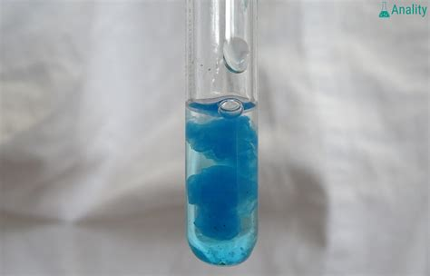
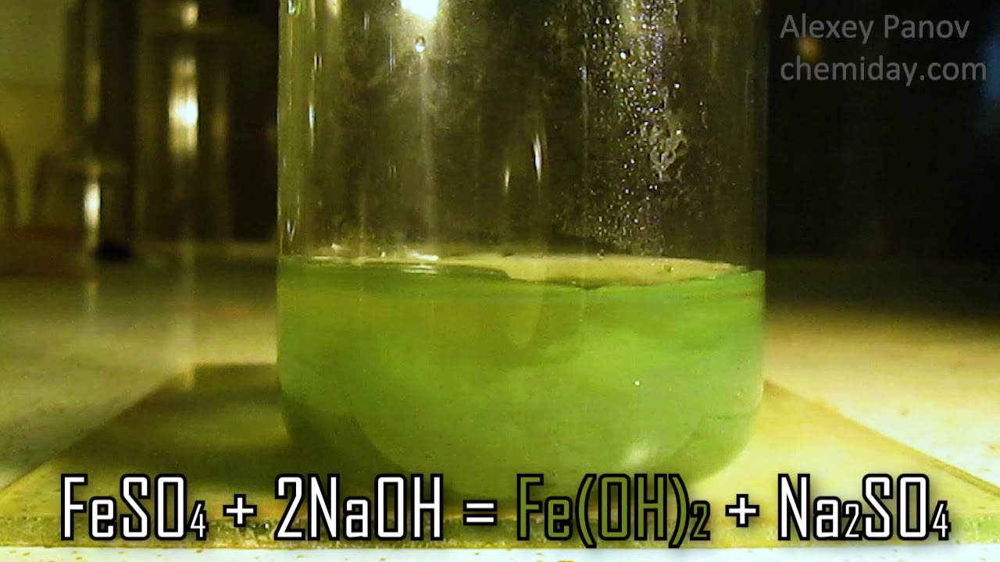
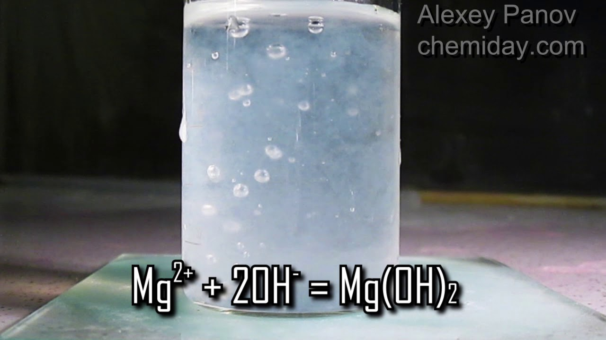
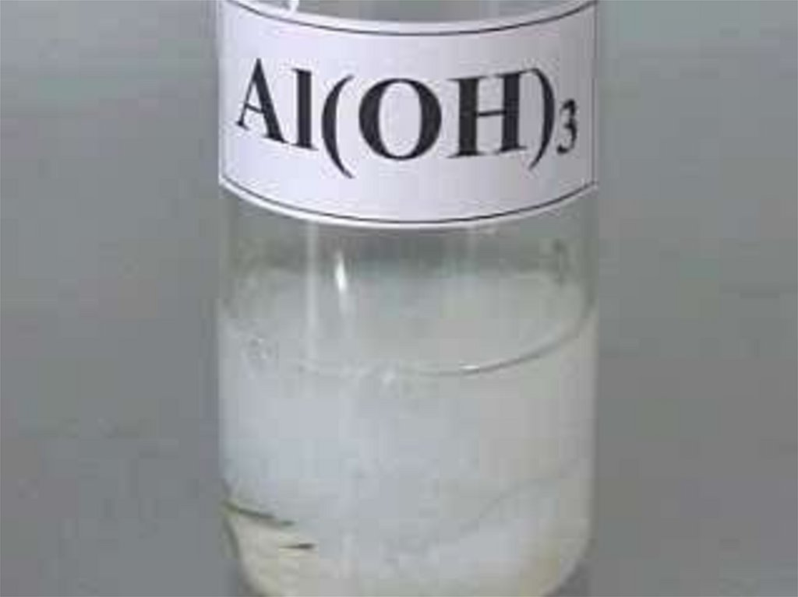
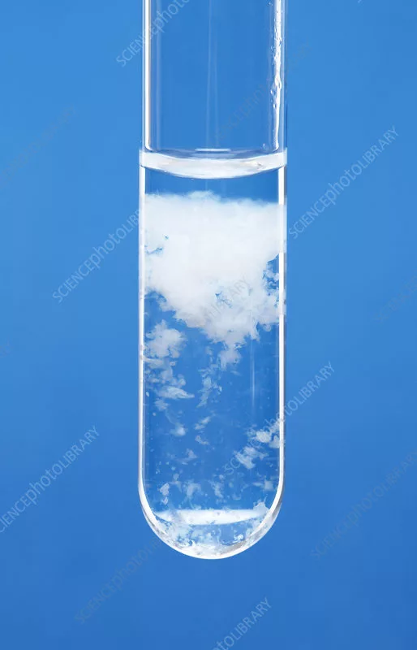

Основания и амфотерные гидроксиды: Классификация, Свойства, Получение
В этом разделе: Подробный разбор классификации, физических и химических свойств, а также способов получения оснований и амфотерных гидроксидов.
1. Классификация оснований и гидроксидов
Основания (гидроксиды) — это сложные вещества, состоящие из катиона металла (или иона аммония NH₄⁺) и одной или нескольких гидроксильных групп OH⁻.
По растворимости в воде:
- Растворимые (Щёлочи): Образованы щелочными (Li, Na, K, Rb, Cs) и щелочноземельными (Ca, Sr, Ba) металлами. Являются сильными электролитами.
- Нерастворимые: Гидроксиды большинства других металлов (Cu, Fe, Zn, Al и др.). Являются слабыми электролитами.
По химическим свойствам:
- Основные гидроксиды: Проявляют только основные свойства (реагируют с кислотами). Характерны для металлов в с.о. +1, +2.
- Амфотерные гидроксиды: Проявляют двойственные свойства (реагируют и с кислотами, и со щелочами). Характерны для металлов в с.о. +3, +4 (а также Zn+2, Be+2, Pb+2, Sn+2).
По кислотности (числу групп OH):
- Однокислотные (NaOH, KOH)
- Двухкислотные (Ca(OH)₂, Cu(OH)₂)
- Трехкислотные (Fe(OH)₃, Al(OH)₃)
2. Физические свойства
Большинство оснований — твердые вещества различного цвета.
| Формула | Название | Физические свойства | Фото |
|---|---|---|---|
| Щёлочи | |||
| NaOH | Гидроксид натрия (Едкий натр, каустик) |
Белое твердое вещество, очень гигроскопично, мылкое на ощупь, разъедает кожу. |  |
| KOH | Гидроксид калия (Едкое кали) |
Белые кристаллы, очень гигроскопичны. |  |
| Ca(OH)₂ | Гидроксид кальция (Гашеная известь) |
Белый рыхлый порошок, малорастворим (известковая вода — насыщенный раствор). |  |
| Ba(OH)₂ | Гидроксид бария | Белые кристаллы, хорошо растворимы. |  |
| Нерастворимые основания | |||
| Cu(OH)₂ | Гидроксид меди(II) | Студенистый осадок голубого цвета. |  |
| Co(OH)₂ | Гидроксид кобальта(II) | Сиреневый осадок. |

|
| Fe(OH)₂ | Гидроксид железа(II) | Белый (или зеленоватый) осадок, быстро темнеющий (буреющий) на воздухе. |  |
| Mg(OH)₂ | Гидроксид магния | Белое аморфное вещество. |  |
| Ni(OH)₂ | Гидроксид никеля(II) | Светло-зеленый осадок. |

|
| Амфотерные гидроксиды | |||
| Al(OH)₃ | Гидроксид алюминия | Белый желеобразный осадок. |  |
| Zn(OH)₂ | Гидроксид цинка | Белый осадок. |  |
| Fe(OH)₃ | Гидроксид железа(III) | Красно-бурый (ржавый) осадок. |

|
| Cr(OH)₃ | Гидроксид хрома(III) | Серо-зеленый осадок. |

|
3. Получение оснований и амфотерных гидроксидов
1. Получение щелочей
- Взаимодействие щелочных и щелочноземельных металлов с водой:
2Na + 2H₂O → 2NaOH + H₂↑
Ca + 2H₂O → Ca(OH)₂ + H₂↑ - Взаимодействие оксидов щелочных и щелочноземельных металлов с водой:
Li₂O + H₂O → 2LiOH
BaO + H₂O → Ba(OH)₂ - Электролиз растворов солей (хлоридов):
2NaCl + 2H₂O ⚡→ 2NaOH + H₂↑ + Cl₂↑ - Взаимодействие солей с другими щелочами (если образуется осадок):
K₂CO₃ + Ca(OH)₂ → CaCO₃↓ + 2KOH (каустификация поташа)
2. Получение нерастворимых оснований и амфотерных гидроксидов
- Взаимодействие растворимых солей со щелочами:
CuCl₂ + 2NaOH → Cu(OH)₂↓ + 2NaCl
FeSO₄ + 2KOH → Fe(OH)₂↓ + K₂SO₄
AlCl₃ + 3NaOH(недост.) → Al(OH)₃↓ + 3NaCl
ZnSO₄ + 2KOH(недост.) → Zn(OH)₂↓ + K₂SO₄
Важно избегать избытка щелочи при получении амфотерных гидроксидов, так как они растворяются в избытке!
4. Химические свойства оснований и амфотерных гидроксидов
4.1. Химические свойства щелочей
| Свойство | Реакция |
|---|---|
| 1. Диссоциация в растворе |
NaOH → Na⁺ + OH⁻ Изменяют цвет индикаторов (лакмус - синий, фенолфталеин - малиновый, метилоранж - желтый) |
| 2. Взаимодействие с кислотными оксидами |
CO₂ + 2NaOH → Na₂CO₃ + H₂O P₂O₅ + 6KOH → 2K₃PO₄ + 3H₂O SO₂ + Ca(OH)₂ (изб.) → CaSO₃ + H₂O 2SO₂ (изб.) + Ca(OH)₂ → Ca(HSO₃)₂ SiO₂ + 2NaOH t°→ Na₂SiO₃ + H₂O |
| 3. Взаимодействие с кислотами |
NaOH + HCl → NaCl + H₂O 2KOH + H₂S → K₂S + 2H₂O KOH + H₂SO₄ (изб.) → KHSO₄ + H₂O 3NaOH + H₃PO₄ → Na₃PO₄ + 3H₂O Реакция нейтрализации |
| 4. Взаимодействие с амфотерными оксидами |
В расплаве: Al₂O₃ + 2KOH t°→ 2KAlO₂ + H₂O В растворе: ZnO + 2NaOH + H₂O → Na₂[Zn(OH)₄] |
| 5. Взаимодействие с амфотерными гидроксидами |
В расплаве: Al(OH)₃ + KOH t°→ KAlO₂ + 2H₂O В растворе: Zn(OH)₂ + 2NaOH → Na₂[Zn(OH)₄] |
| 6. Взаимодействие с солями |
CuCl₂ + Ca(OH)₂ → CaCl₂ + Cu(OH)₂↓ NH₄Cl + KOH → NH₃↑ + H₂O + KCl KHCO₃ + KOH → K₂CO₃ + H₂O MgCl₂ + 2NaOH → Mg(OH)₂↓ + 2NaCl AlCl₃ (изб.) + 3NaOH → Al(OH)₃↓ + 3NaCl AlCl₃ + 4NaOH (изб.) → Na[Al(OH)₄] + 3NaCl |
| 7. Взаимодействие с металлами |
2Al + 2NaOH + 6H₂O → 2Na[Al(OH)₄] + 3H₂↑ Zn + 2KOH + 2H₂O → K₂[Zn(OH)₄] + H₂↑ Be + 2LiOH + 2H₂O → Li₂[Be(OH)₄] + H₂↑ |
| 8. Взаимодействие с неметаллами |
3S + 6NaOH → Na₂SO₃ + 2Na₂S + 3H₂O 4P + 3KOH + 3H₂O → 3KH₂PO₂ + PH₃↑ Si + 2KOH + H₂O → K₂SiO₃ + 2H₂↑ Cl₂ + 2NaOH → NaCl + NaClO + H₂O (на холоде) 3Cl₂ + 6NaOH t°→ 5NaCl + NaClO₃ + 3H₂O * - для Br₂ аналогично |
| 9. Взаимодействие с хлорангидридами кислот | PCl₅ + 8NaOH → Na₃PO₄ + 5NaCl + 4H₂O |
| 10. Термическое разложение |
2LiOH t°→ Li₂O + H₂O Ca(OH)₂ t°→ CaO + H₂O Большинство щелочей (NaOH, KOH) плавятся без разложения. |
4.2. Химические свойства нерастворимых оснований
| Свойство | Реакция |
|---|---|
| 1. Взаимодействие с кислотными оксидами | SO₃ + Cu(OH)₂ → CuSO₄ + H₂O |
| 2. Взаимодействие с кислотами (кроме H₂SiO₃) |
Fe(OH)₂ + 2HCl → FeCl₂ + 2H₂O Cu(OH)₂ + H₂SO₄ → CuSO₄ + 2H₂O Mg(OH)₂ + 2HNO₃ → Mg(NO₃)₂ + 2H₂O |
| 3. Термическое разложение |
Cu(OH)₂ t°→ CuO + H₂O Mg(OH)₂ t°→ MgO + H₂O 2Fe(OH)₃ t°→ Fe₂O₃ + 3H₂O |
| 4. Специфические свойства |
2Fe(OH)₂ + H₂O₂ → 2Fe(OH)₃ Cu(OH)₂ + 4NH₃ · H₂O → [Cu(NH₃)₄](OH)₂ + 4H₂O |
4.3. Химические свойства амфотерных гидроксидов
| Свойство | Пример реакции |
|---|---|
| Взаимодействие с кислотными оксидами | 2Al(OH)₃ + 3SO₃ → Al₂(SO₄)₃ + 3H₂O |
| Взаимодействие с кислотами |
Zn(OH)₂ + 2HCl → ZnCl₂ + 2H₂O 2Al(OH)₃ + 3H₂SO₄ → Al₂(SO₄)₃ + 6H₂O |
| Взаимодействие с основными оксидами |
При сплавлении: 2Al(OH)₃ + Na₂O t°→ 2NaAlO₂ + 3H₂O |
| Взаимодействие со щелочами |
При сплавлении: Fe(OH)₃ + KOH t°→ KFeO₂ + 2H₂O Cr(OH)₃ + NaOH t°→ NaCrO₂ + 2H₂O В растворе: Be(OH)₂ + 2NaOH → Na₂[Be(OH)₄] Zn(OH)₂ + 2KOH → K₂[Zn(OH)₄] |
| Взаимодействие с карбонатами |
При сплавлении: Na₂CO₃ + Zn(OH)₂ t°→ Na₂ZnO₂ + CO₂ + H₂O |
| Разложение |
При нагревании: 2Fe(OH)₃ t°→ Fe₂O₃ + 3H₂O |
| Специфические свойства |
2Cr(OH)₃ + 3H₂O₂ + 4NaOH → 2Na₂CrO₄ + 8H₂O 2Fe(OH)₃ + 3Br₂ + 10KOH → 2K₂FeO₄ + 6KBr + 8H₂O |
4.4. Химические свойства гидроксида аммония
| Свойство | Реакция |
|---|---|
| 1. Диссоциация в растворе |
NH₃ · H₂O ⇄ NH₄⁺ + OH⁻ Слабое основание, изменяет цвет индикаторов. |
| 2. Взаимодействие с солями |
AlCl₃ + 3NH₃ · H₂O → Al(OH)₃↓ + 3NH₄Cl FeSO₄ + 2NH₃ · H₂O → Fe(OH)₂↓ + (NH₄)₂SO₄ Cr(NO₃)₃ + 3NH₃ · H₂O → Cr(OH)₃↓ + 3NH₄NO₃ |
| 3. Специфические свойства |
Cu(OH)₂ + 4NH₃ · H₂O → [Cu(NH₃)₄](OH)₂ + 4H₂O Ag₂O + 4NH₃ · H₂O → 2[Ag(NH₃)₂]OH + 3H₂O Zn(OH)₂ + 4NH₃ · H₂O → [Zn(NH₃)₄](OH)₂ + 4H₂O |
🎯 Пройди
тест по теме
Проверь свои
знания. Задания формата ЕГЭ.